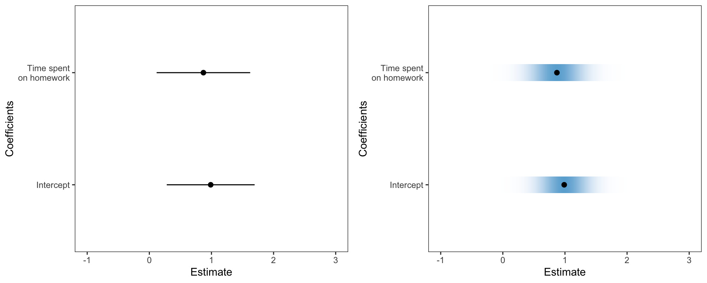
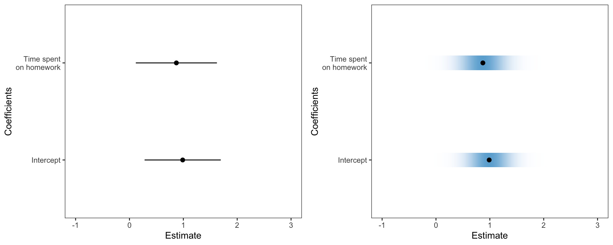
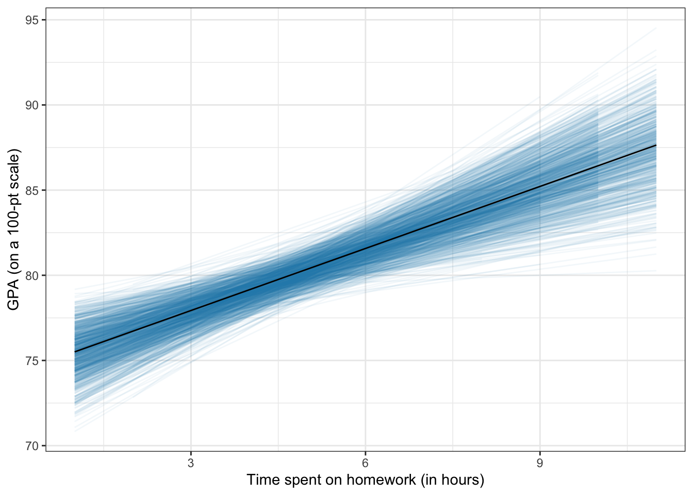
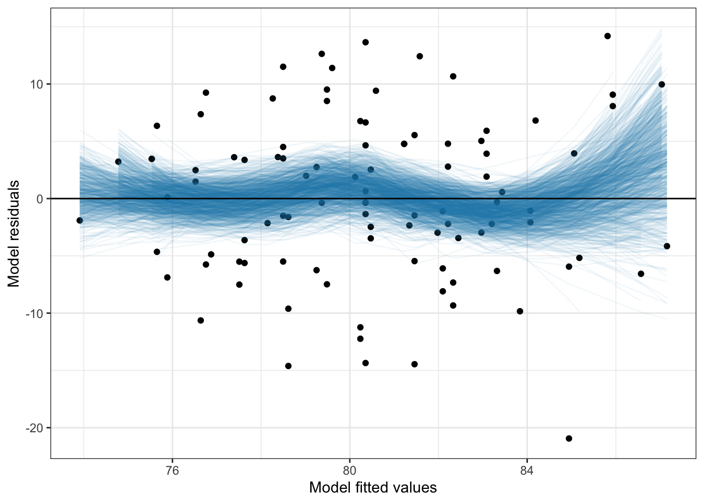
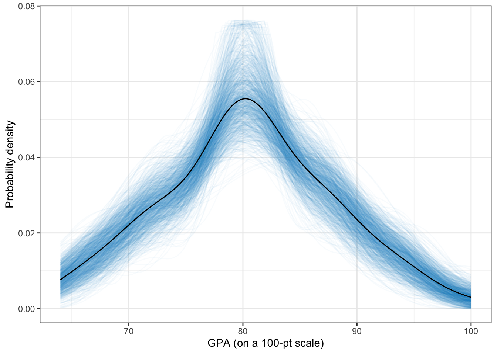
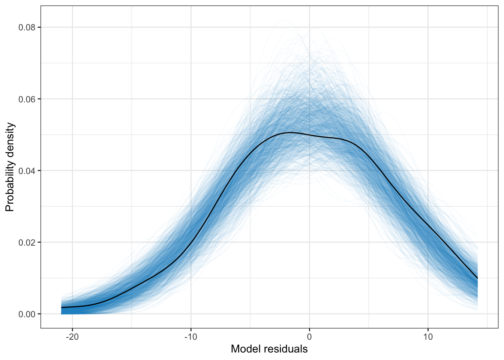

Warning: `stat(ndensity)` was deprecated in ggplot2 3.4.0.
ℹ Please use `after_stat(ndensity)` instead.Warning: Removed 4 rows containing missing values (`geom_tile()`).
Andy
June 26, 2019
./assets/body-header.qmd
In March, the ASA published a special issue of The American Statistician (TAS) related to statistical inference in the 21st century. In the initial article, Moving to a World Beyond “p < 0.05”, Wassersein, Schirm, and Lazar (2019) write for the ASA saying,
“The ASA Statement on P-Values and Statistical Significance stopped just short of recommending that declarations of “statistical significance” be abandoned. We take that step here. We conclude, based on our review of the articles in this special issue and the broader literature, that it is time to stop using the term “statistically significant” entirely. Nor should variants such as “significantly different,” “p < 0.05,” and “nonsignificant” survive, whether expressed in words, by asterisks in a table, or in some other way. (p. 2)”
Since reading this, I have been thinking about how to address these suggestions (mandates?) in our statistics curriculum. The suggestions offered in the article are nice, but a bit big-picture for applied scientists, things like:
Ron Wasserstein in his talk at USCOTS wasn’t much more helpful in what to do, but gave a gem of a quote when he said,
“Small p-values are like a right-swipe in Tinder. It means you have an interest. It doesn’t mean you’re ready to book the wedding venue.”
But how does all of this translate in a statistical methods course (built around the general linear model) for graduate students in the social sciences? That is what I have been thinking about since March, and so far I have a few, albeit very few, ideas abut how to do this. Here are some things I plan on changing/incorporating into the course.
First off, I will be actively discouraging the use of anything related to “\(p<.05\)” or the use of the word “significance”. I have done this in the past, but this year I am really goiing to go after it. The question is what to do instead? I am going to try using language such as “consistent with” or “compatible with” in these interpretations. For example,
The p-value of .003 suggests that the empirical data are inconsistent with the hypothesis that the regression coefficient differs from zero only because of sampling error. This, along with the positive sample slope provide evidence that time spent on homework likely has a positive association with GPA.
This type of interpretation is not that different than I have had students use in the past. I think the bigger difference is for results with larger p-values. Here the emphasis is
The p-value of .13 does not provide evidence against the hypothesis that the regression coefficient differs from zero only because of sampling error. While the empirical data are consistent with this hypothesis, it may also be the case that there is a positive relationship between time spent on homework and GPA (as evidenced by the positve sample slope) but the data do not contain enough statistical information to ascertain this relationship.
The big diffeence is I want to eliminate the “reject” or “fail to reject” language I have used in the past. In the second case, I also want students to illuminate the idea that data are consistent with multiple hypothesized values.
When teaching about confidence intervals, I am thinking about focusing on them as “compatibility intervals” as suggested by Amrhein, Greenland, and McShane (2019). Here are four points I plan on stressing:
To help with these ideas I am going to have students use visual representations of these that make the uncertainty more apparant. In the past I have had students create coefficient plots, but these tended to use lines to show the CIs for each of the regression coefficients. This year I am going to use Claus Wilke’s ungeviz package to create these plots. This package employs color density to indicate uncertainty; darker more dense color is associated with more certainty and lighter less dense color is associated with less certainty.
Warning: `stat(ndensity)` was deprecated in ggplot2 3.4.0.
ℹ Please use `after_stat(ndensity)` instead.Warning: Removed 4 rows containing missing values (`geom_tile()`).
The syntax is straightforward. After fitting a linear model, obtain the coefficient-level output using tidy() and then use Wilke’s stat_confidence_density() function. I found his package documentation quite good and easy to implement. Here is the syntax I used. (The keith-gpa.csv data used is available here.)
# Fit model
lm.1 = lm(gpa ~ 1 + homework + parent_ed, data = keith)
# Coefficient plot
broom::tidy(lm.1) %>%
filter(term != "(Intercept)") %>%
ggplot(aes(x = estimate, y = term)) +
stat_confidence_density(aes(moe = std.error, fill = stat(ndensity)), height = 0.15, confidence = 0.68) +
geom_point(aes(x = estimate), size = 2) +
xlim(-1, 3) +
theme_bw() +
scale_fill_gradient(low = "#eff3ff", high = "#6baed6") +
theme(
panel.grid.major = element_blank(),
panel.grid.minor = element_blank()
) +
scale_y_discrete(name = "Coefficients", labels = c("Intercept", "Time spent\non homework")) +
xlab("Estimate")I also want students to consider uncertainty in plots of their regression lines. In the past I have used geom_smooth() with the argument se=TRUE (default). However, this just draws the confidence enevelope as lines, which has the same issues as the earlier coefficient plot. To voercome this, I used ideas from Felix Schonbrodt to bootstrap potential regression lines and overlay them on a plot so that I could implement color density to illustrate uncertainty. I wrote these into a function stat_watercolor_smooth() in my educate package available via github. Note that I am NOT an R programmer; at best a script kiddie, so I do not promise these are curated nor great code.
For example, here is a line fitted using a simple linear regression.

By omitting the method="lm" arguement a loess smoother will be fitted, similar to geom_smooth(). This can be useful for evaluating the linearity assumption in regression.

The uncertainty displayed in the plot suggests that empirical values are not inconsistent with the assumption of linearity (i.e., the uncertainty in the conditional mean values encompasses 0).
I use density plots in these methods courses and have used the sm.density() package for many years due to its ability to produce confidence envelopes for particular models. One drawback is that this package uses base R graphics. So this summer I wrote some syntax to implement some of these features using ggplot. These functions are available in my educate package via github.
I used the same idea of In this package I bootstrap to create a spaghetti plot of hypothetical densities (which produce a “confidence enevelope”) and then use color density to show uncertainty.
library(educate)
ggplot(data = keith, aes(x = gpa)) +
stat_density_watercolor(k = 1000) +
stat_density(size = 0.5, geom = "line") +
theme_bw() +
xlab("GPA (on a 100-pt scale)") +
ylab("Probability density")Warning: Using `size` aesthetic for lines was deprecated in ggplot2 3.4.0.
ℹ Please use `linewidth` instead.
We can also use this to evaluate normality assumptions. This is quite useful for examining model assumptions. For example, here I plot the density of the marginal residuals from the previously fitted linear model.
broom::augment(lm.1) %>%
ggplot(aes(x = .resid)) +
stat_density_watercolor(k = 1000, model = "normal") +
stat_density(size = 0.5, geom = "line") +
theme_bw() +
xlab("Model residuals") +
ylab("Probability density")
Here the empirial density associated with the model residuals is not inconsistent with the assumption of normality (at least marginally).
These are my inital ideas. I am really curious to talk with other statistics educators to hear how they are addressing the p-value post TAS publication.
Amrhein, V., Greenland, S., & McShane, B. (2019). Comment: Retire statistical significance. Nature, 567, 305–307.
Wasserstein, R. L., Schirm, A. L., & Lazar, N. A. (2019). Moving to a world Beyond “p < 0.05.” The American Statistician, 73(sup1), 1–19. http://doi.org/10.1080/00031305.2019.1583913
I have been in a